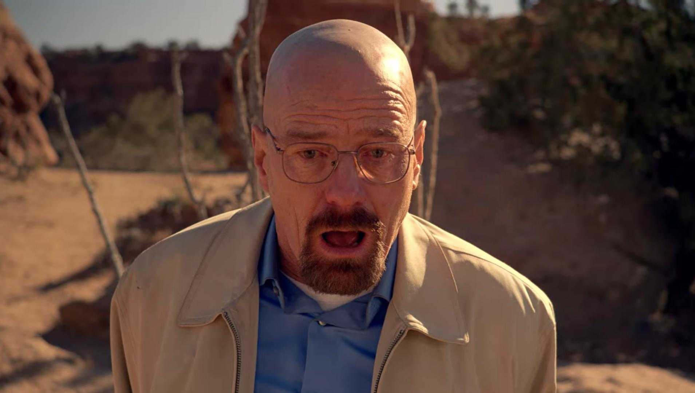
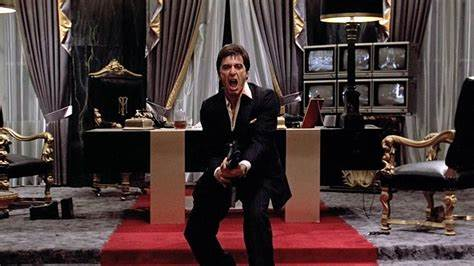
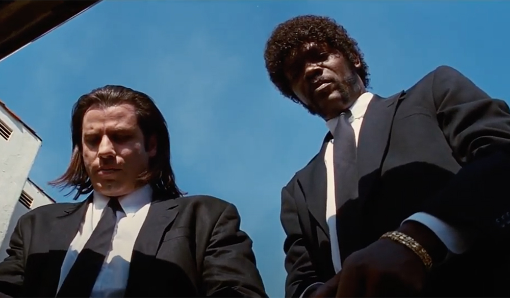

Galeria

Bryan Cranston jako Walter White w serialu Breaking Bad, ujęcie z najlepiej ocenianego odcinka - Ozymandiasz(S5 E14)

Al Pacino jako Tony Montana w kultowym filmie "Scarface"

John Travolta jako Vincent Vega, oraz Samuel L. Jackson jako Jules Winnfield w jednym z najlepszyh filmów Quentina Tarantino "Pulp Fiction"